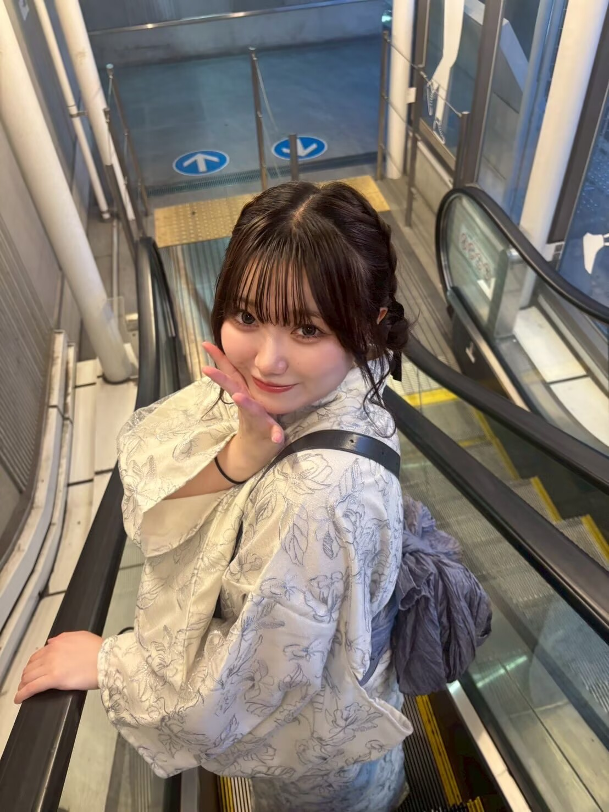
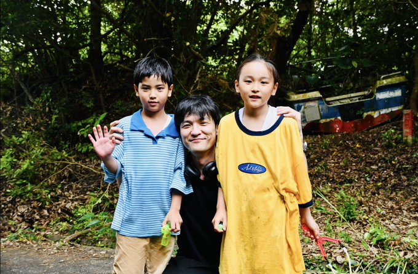
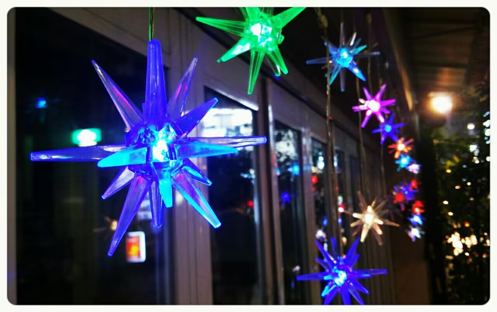
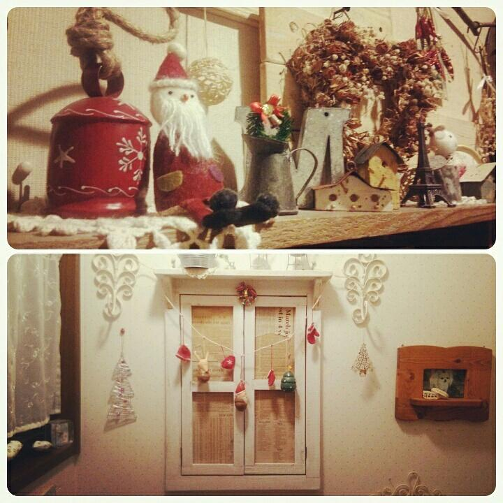
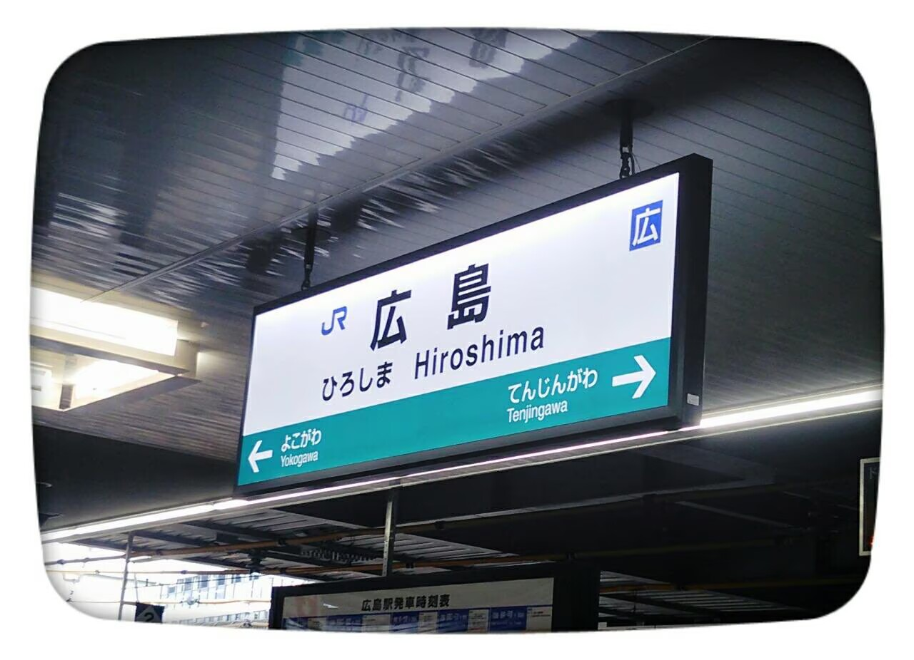
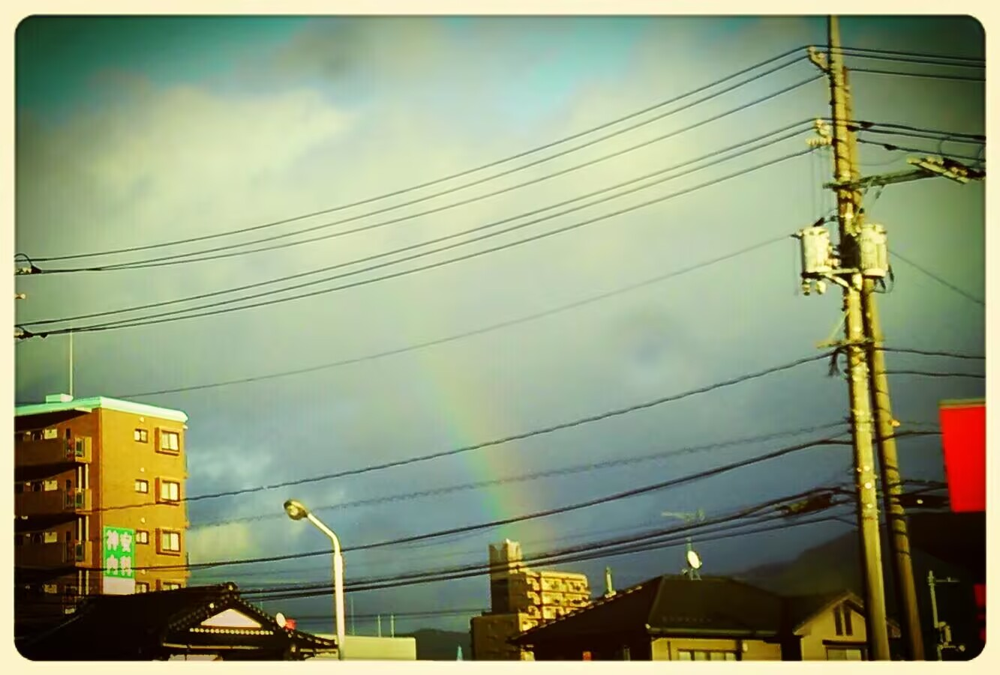
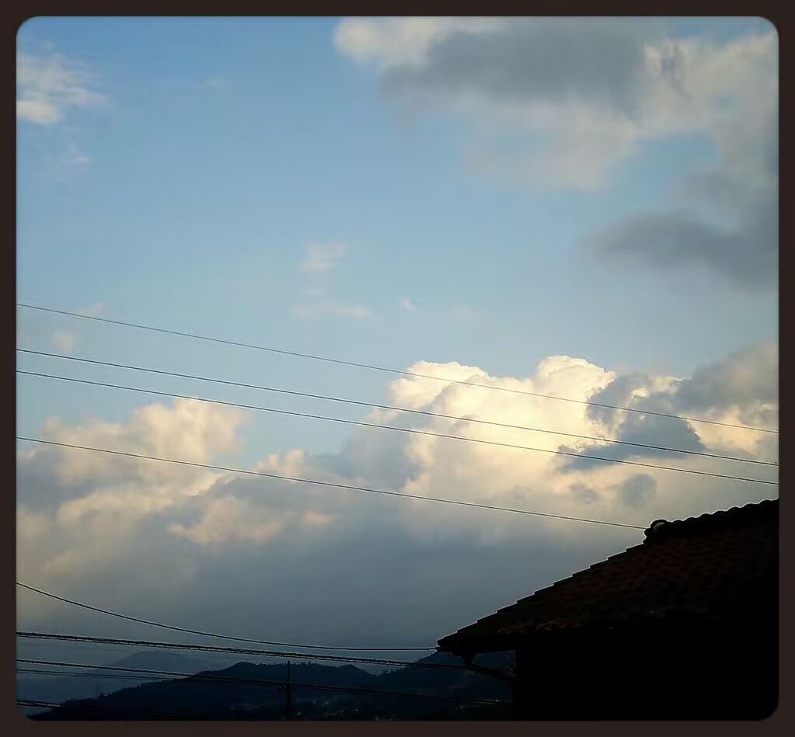
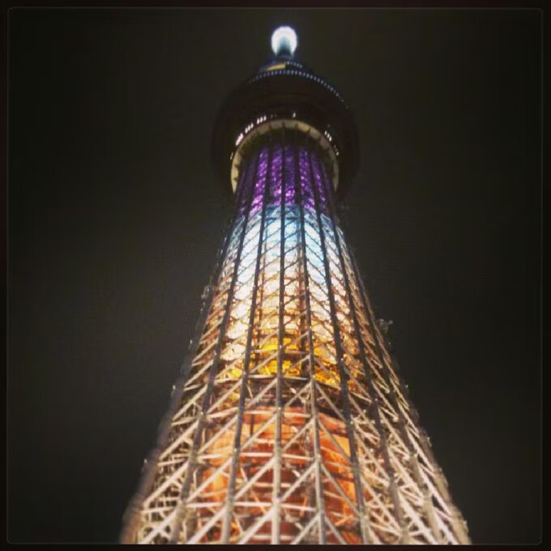

Now playing
MUSIC
J-Pop, especially Yuika .
Interests
Now playing
J-Pop, especially Yuika .
Flight simulation
Flying and controlling on VATSIM and IVAO.
Gaming
FPS games, mostly Overwatch.



Drag the prints around. Click one to look closer.Tap a print to look closer.






Reiwa, in pictures
A small collection of moments from the Reiwa years.